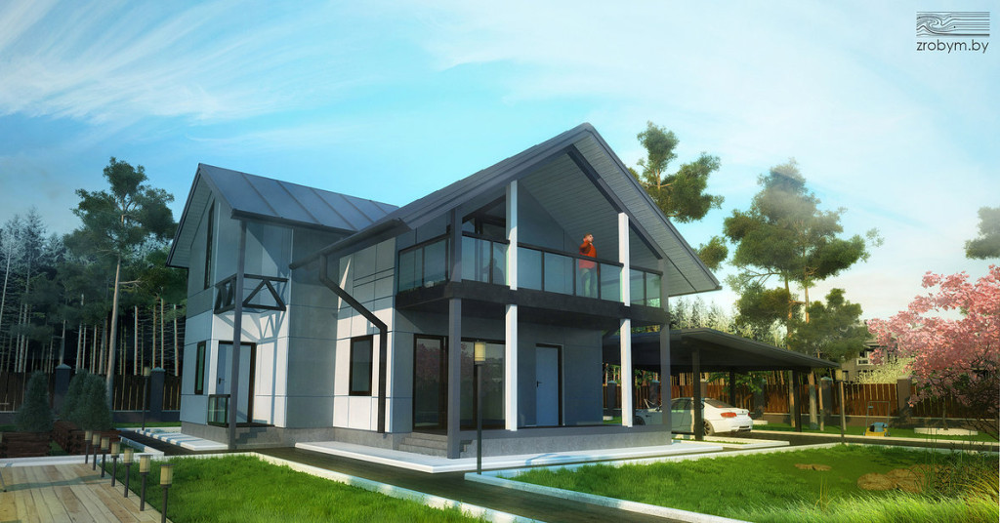
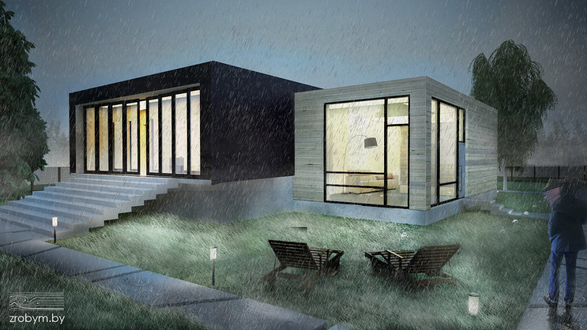

Как выбрать архитектора для проектирования дома?

Итак, вы определились с тем, какой проект хотите заказать (индивидуальный или типовой), имеете представление о том, каким хотите видеть свой будущий дом. Следующий шаг – поиск типового проекта или разработка индивидуального. Кому доверить разработку проекта? Где искать типовой проект? Как определить компетентность специалистов и оценить качество проекта?
Типовой проект: способы приобретения
Приобрести типовые проекты домов в Беларуси можно несколькими способами:
- купить у частной фирмы, занимающейся продажей проектов;
- купить у государственной проектной организации;
- поездить по поселкам и попытаться договориться с владельцами дома о покупке проекта у них. Если вам удастся найти людей, готовых продать свой проект, вы сможете не только сэкономить, но и в реальности увидеть дом, построенный по проекту, поговорить с его владельцами о преимуществах и недостатках, которые выявились на этапе строительства и эксплуатации, при необходимости внести в проект корректировки;
- купить готовый проект через доску объявлений – в среднем за готовый проект просят $100–150;
- обратиться за разработкой эскизного проекта к частнику-архитектору (контактами таких специалистов обычно обмениваются участники строительных форумов). Учитывайте, что частное лицо, предоставляющее услуги по разработке эскизного проекта, должно иметь ИП, иначе проект может не пройти согласование.
Такими же способами приобретается типовой проект дачного дома.
Рынок архитектурных мастерских
На белорусском рынке сегодня работает более десятка крупных компаний, занимающихся продажей типовых проектов. Большинство из них реализует польские разработки.
Стоимость типового проекта дома определяется сложностью архитектурного решения, площадью дома, а также типом проекта (эскизный или строительный). Многие продают эскизные типовые проекты, которые подходят только для получения паспорта застройщика. Самый дешевый эскизный проект 1- и 2-этажного дома площадью 60 м? можно купить за $50. Проекты 1- и 2-этажных домов площадью 100–150 м? будут стоить порядка $100–250, то же самое касается мансардных домов. Если застройщик желает получить полный комплект строительного проекта типового дома, это будет стоить порядка $650 (1-этажные дома) и $700 (мансардные и 2-этажные).
Перед покупкой проекта обязательно уточните, что входит в его состав. Некоторые компании продают только эскизные проекты, предлагая услуги их доработки до строительного (например, фирма «Антей»).
Некоторые продают архитектурные проекты, в состав которых входит эскизный и строительный проект (без конструктивной и инженерной части). Такие проекты предлагает фирма «Стройбери» (стоимость проектов фиксированная – €400, независимо от сложности, этажности и площади), а также архитектурно-строительная компания «Территория» – €500 за любой проект дома до 300 м?.
Компания «Зробим» также продает эскизные типовые проекты по фиксированной стоимости – $150. При этом предлагает несколько видов услуг по их доработке. Так, стоимость готового эскизного проекта типового дома с привязкой на местности вырастет до $300, готовый эскизный проект типового дома с изменениями обойдется в $500.
Проектная мастерская «Проект-М» также продает эскизные типовые проекты частных домов по единой цене – 1,5 млн руб. Доработка эскизного проекта до строительного будет стоить дополнительных 5 млн руб. Такой проект включает в себя конструктивную часть.
В перечне проектов, предлагаемых этими архитектурными бюро, как правило, есть:
- типовые проекты домов из пеноблоков;
- типовые проекты кирпичных домов;
- типовые проекты каркасных домов;
- типовые проекты каркасно-щитовых домов;
- типовые проекты монолитных домов.

Типовой проект энергоэффективного быстровозводимого дома-пазла
Покупка типового проекта у госорганизации
Продажей типовых проектов также занимаются государственные проектные организации. Стоимость строительных проектов у них в разы меньше, однако и выбор не такой богатый. Стоит учитывать, что каталоги государственных проектных организаций не обновлялись уже около десятилетия. Строительные нормы за это время изменились, поэтому, приобретая строительный проект такой давности, учитывайте, что, скорее всего, в него потребуется вносить изменения и корректировки.
До недавнего времени многие застройщики приобретали типовые проекты у «Минсктиппроекта». Сегодня эта организация больше не оказывает таких услуг! Вместо нее продажей типовых проектов сейчас занимается РНТЦ (Республиканский научно-технический центр по ценообразованию в строительстве). Связаться с ними можно по тел. (017) 287-81-25. Организация продает строительные типовые проекты по цене от 600 тыс. до 1,5 млн руб. Стоимость каждого конкретного проекта рассчитывается в зависимости от количества листов в нем. Таким образом, цена зависит от сложности архитектурного решения и этажности дома. В этой организации есть каталог типовых проектов жилых домов.
Продажу типовых строительных проектов также осуществляет организация «Гипросельстрой». У нее имеется альбом с проектами собственной разработки, однако выбор ограничивается всего несколькими вариантами домов. По словам директора, у них имеется единственный проект 1-этажного дома и несколько проектов больших домов, разработкой которых организация занималась для семей с приемными детьми. Стоимость проектов – незначительно ниже, чем у РНТЦ. По телефону «Гипросельстрой» консультаций не дает. Чтобы ознакомиться с каталогом проектов и их стоимостью, нужно прийти непосредственно в организацию по адресу г. Минск, ул. В. Хоружей, 29. Время работы: пн–чт 08.15–17.15, пт 08.15–16.00.
Несколько лет назад многие застройщики из соображений экономии также покупали типовые строительные проекты у «Минскгражданпроекта». Сегодня эта организация продажей проектов не занимается.
Итак, единственная в республике государственная организация, которая может предложить выбор типовых проектов для частного дома, – РНТЦ. Располагается по адресу ул. Некрасова, 114. Режим работы: пн–пт 08.30–17.15, обед с 13.00 до 13.45.
Осторожно, Интернет!
Некоторые потенциальные застройщики в поисках типового проекта отправляются на просторы Интернета.Действительно, потратив несколько часов на поиски во Всемирной сети, можнонайти не только множество изображений частных домов, но и скачать готовые эскизные проекты (чаще всего это иностранные сайты, соответственно, и вся сопроводительная документация оформлена на иностранном языке).
Стоит ли тратить на это время? Перспектива выглядит сомнительной, особенно если речь идет о строительстве дома в черте Минска. Согласовать такой проект вы не сможете – для этого нужно предоставить документы его автора. Следовательно, чтобы пройти согласование, понадобится обращаться в архитектурную мастерскую, которая на основе найденного вами эскиза нарисует новый. Деньги это не сэкономит, а время заберет.
В то же время Интернет дает возможность познакомиться с вариантами архитектурных решений современных домов, определиться с личными предпочтениями.
Индивидуальный проект дома: цена зависит от нескольких факторов
Разработкой индивидуальных проектов частных домов в нашей стране занимаются только частные организации или ИП. При этом стоимость данного вида услуг, предоставляемого разными мастерскими, может отличаться не на один десяток у.е. Стоимость разработки индивидуального проекта (как эскизного, так и строительного) у разных компаний зависит от разных критериев.
• Размеры дома
Есть ряд организаций, которые рассчитывают стоимость разработки индивидуального проекта в зависимости от площади дома. Например, фирма «Дело застройщика». На их сайте даже имеется калькулятор расчета, где после введения площади дома программа выдает данные о стоимости эскизного, строительного и инженерного проектов.
Некоторые компании работают по принципу «больше площадь дома – дешевле проект» (архитектурная мастерская «Мойдом.бай»). Индивидуальная разработка строительного проекта (включая эскизный) осуществляется по следующим ценам:
- 30–60 м? – $30 за 1 м?;
- 60–150 м? – $18 за 1 м?;
- 150–250 м? – $15 за 1 м?;
- 250–300 м? – $13 за 1 м?;
- 300–400 м? – $12 за 1 м?;
- 400–500 м? – $10 за 1 м?;
- свыше 500 м? – по договоренности.
• Сложность проекта
Некоторые архитектурные бюро определяют стоимость работы над проектом исходя из его сложности. Здесь учитывается не только площадь дома, но и другие показатели, например, сложность рельефа, на котором будет строиться дом. По такому принципу работает «Архитектурное бюро 35». Конечная стоимость разработки индивидуального проекта определяется во время общения с клиентом. Ориентировочно индивидуальный проект дома площадью 300 м? будет стоить $12–13 тыс. Эскизный проект на 40% дешевле.
Таким же принципом при разработке индивидуальных проектов руководствуется архитектурно-строительная компания Юлии Скорыниной. Стоимость работы зависит от площади дома и сложности конструктивных решений (кровли, фундамента и т.п.). Эта фирма предлагает работу над эскизными проектами по цене от $4 тыс., строительными – от $20 тыс. (площадь дома 150–200 м?).
• Фиксированная стоимость услуги
Некоторые компании устанавливают фиксированную цену на разработку индивидуального эскизного, строительного и конструктивного проекта, вне зависимости от размеров дома. Например, архитектурная мастерская «Проект-М» предлагает разработку индивидуального эскизного проекта по цене 4 млн руб., строительного проекта с конструктивными решениями – 5 млн руб. Проектная документация на инженерные сети (водопровод, канализация, отопление, электрообеспечение и.т.д.) оформляется по цене от 1,5 млн руб. за 1 раздел.
В архитектурной студии «Зробим» также можно приобрести индивидуальный проект дома. Стоимость услуги по разработке индивидуального проекта (эскизного, строительного и конструктивного) также фиксированная:
- индивидуальная разработка эскизного проекта –$800;
- индивидуальная разработка строительного проекта – $1100 (раздел АС строительного проекта);
- инженерные разделы проекта (цены указаны в случае, если необходимо выполнение разделов по частям): водопровод и канализация –$130; отопление – $250; электрооборудование – $130; конструктивные решения – $600.
Но при этом есть ограничения: если площадь дома превышает 200 м?, цена увеличится.
Фиксированную цену на разработку индивидуального проекта для домов площадью до 120 м? (4 млн руб. – эскиз, 5,5 млн руб. – строительный проект) также предлагает архитектурное бюро «1000 проектов». Если площадь дома превышает 120 м?, стоимость индивидуального проекта рассчитывается исходя из стоимости 1 м?: 35 тыс. руб. – эскизный, 45 тыс. руб. – строительный.
Некоторые компании увеличивают стоимость разработки индивидуального проекта на $200–300, если дом проектируется для Минска или другого областного центра.
Также цена проекта увеличивается, если проект предполагает сложности в процедуре согласования. Например, если дом 3-этажный, с подвалом и т.п. В этом случае он относится к зданиям 3-й категории сложности.

Проект модернистского дома с прямой крышей
Алексей Кораблев: «Если человек идет по пути индивидуального проектирования, важно, чтобы он имел четкое представление о том, что ему нужно. И здесь необходимо прислушиваться к советам архитекторов. Иногда человек хочет сделать в доме то, что ему совершенно не понадобится для комфортной жизни, а может, и помешает. Например, не стоит делать комнаты большой площади – максимум 18 м?, не нужно строить дом в 3 этажа, даже если в семье много детей, строить высокие потолки – по 3 м, т.к. такой дом будет дорого отапливать».
Андрусь Bezdar: «Я против! Я считаю, что потолки должны быть минимум 3 м. Причина – в экологии, ведь известно, что отработанный воздух скапливается под потолком. Если потолки низкие, человек дышит отработанным воздухом. Также немаловажное значение играет пространство: человек чувствует себя комфортнее в помещении с высокими потолками. При этом все должно быть гармонично: в длинной и узкой комнате высокие потолки не нужны».
Как выбрать архитектора
Если имеющийся в госорганизации ассортимент проектов не отвечает вашим пожеланиям, для покупки/разработки проекта нужно обращаться в частную фирму. Отзывы о работе архитектурных бюро говорят о том, что работающие на рынке компании не всегда предоставляют качественные услуги. Какими критериями стоит руководствоваться при выборе исполнителя?
1. Личная встреча
Для того чтобы оценить компетентность специалистов, договоритесь о личной встрече с архитекторами. Как правило, общение с архитектором в рамках 60 мин – бесплатная опция большинства архитектурных мастерских.
2. Задавайте конкретные вопросы
Прежде чем прийти к архитектору, составьте список вопросов, которые вы хотите задать. Вопросы должны быть конкретными, требуйте на них не менее конкретных ответов. Хороший специалист не будет давать неоднозначных ответов, уводить разговор в сторону. После беседы у вас должна сложиться общая картина, в которой нет пробелов и нестыковок.
3. Не попадайтесь на маркетинговые уловки
Грамотные специалисты пользуются конкретными терминами для обозначения своих услуг и все называют своими именами. В их лексике присутствуют такие термины, как эскизный, строительный проект, конструктивные решения, инженерный проект.
Компании, целью которых прежде всего является привлечение клиентов, используют всевозможные уловки. Скорее всего, в перечне их услуг эскизный проект будет обозначен каким-то другим, более привлекательным названием. Специалисты компании вам скажут, что предлагаемый ими проект отличается от обычного эскизного наличием в нем дополнительных чертежей. Не идите на поводу у таких продавцов услуг, т.к. для согласования у главного архитектора никакие «дополнительные» чертежи, кроме тех, что включает в себя стандартный эскизник, не нужны. А для строительства дома «дополнительных» чертежей недостаточно. Это не более чем маркетинговый ход, которым компании пользуются для обоснования более высокой стоимости своих услуг в сравнении с конкурентами.
4. Отзывы клиентов
Поищите на строительных форумах отзывы о специалистах, у которых вы планируете заказать разработку проекта. Еще лучше – свяжитесь с клиентами компании и расспросите их лично о впечатлениях от работы с архитекторами. При этом старайтесь объективно оценить как положительные, так и отрицательные отзывы. Снова задавайте конкретные вопросы. Может получиться так, что клиент остался доволен работой компании из-за суммы, которую удалось сэкономить, при этом он лояльно относится к недочетам. Если для вас качество работы является определяющим критерием, этот положительный отзыв не является ценным.
5. Цена проекта – не главный критерий!
При выборе исполнителя строительного проекта критерий стоимости не должен быть главным! В поисках дешевого варианта можно стать жертвой некомпетентных специалистов, так же как и высокая стоимость не всегда гарантирует качество. Обращайте внимание на стоимость только при прочих равных условиях.
6. Обратите внимание на дополнительные услуги
Безусловно, всякая архитектурная мастерская заинтересована в том, чтобы вы не только купили у них типовой проект, но и воспользовались дополнительными услугами. Это должно быть интересно не только им, но и заказчику, т.к. позволяет сэкономить время на поиски исполнителя по каждому виду работ. Большинство частников предоставляют комплексные услуги – геодезические изыскания, согласование проекта, авторский надзор, строительство. Оцените стоимость разных видов услуг, чтобы понимать, сможете ли вы работать с этой компанией в дальнейшем.
7. Кто является учредителем фирмы?
Хорошо, если у вас получится найти информацию о том, кто является учредителем архитектурного бюро – архитектор или бизнесмен-менеджер. Для архитекторов важно творчески развиваться, для менеджеров – зарабатывать деньги. От этого зависит подход и качество работы с клиентами.
Самостоятельное проектирование дома
Некоторые застройщики в целях экономии средств пробуют заняться проектированием собственного дома самостоятельно. Казалось бы, и средства для этого сегодня имеются, было бы желание. В сети интернет в свободном доступе есть множество программ для проектирования частного дома. Кроме того есть сервисы, которые позволяют осуществить online проектирование домов.
Однако прежде чем выбрать этот вариант приобретения проекта, ответьте себе на несколько вопросов. Обладаете ли вы достаточными знаниями, чтобы осуществить сложный технологический расчет, пусть даже с помощью программы? Наверняка, ответ будет отрицательным, ведь не зря специалистов, обладающих квалификацией, необходимой для проектирования, готовят на протяжении 6 лет учебы в вузе. Даже зная в общих чертах правила проектирования дома, вы не сможете создать проект, отвечающий всем нормам и требованиям. А уж тем более построить дом, который простоит десятилетия. Не переоценивайте свои силы, занимайтесь тем, что у вас получается лучше всего, а разработку проекта доверьте профессионалам.
Процедура согласования
Эскизный проект можно согласовывать самостоятельно или через фирму, которая занималась его разработкой (нужно узнавать, предоставляет ли компания такой вид услуг). Приблизительная стоимость процедуры согласования проектировщиком – $50.
Нужно учитывать, что порядок согласования в Минске и областных центрах отличается от той же процедуры в районах.
Для согласования проекта в областных центрах в областной исполком предоставляются следующие документы:
- заявление;
- свидетельство о государственной регистрации земельного участка с кадастровым планом;
- разрешение на проектирование и строительство;
- эскизный проект.
Согласование проекта в Минском районе осуществляется в Минском райисполкоме (отдел архитектуры и строительства), расположенном по адресу: г. Минск, ул. Ольшевского, 8 (тел. (017) 204-40-24).
Для согласования проекта в Минске нужно сначала согласовать эскизный проект с разрешением на строительство и проектирование и свидетельством на землю у главного архитектора своего района, потом написать заявление и отнести документацию в Минский комитет архитектуры и градостроительства. Они согласовывают эскизный проект и выдают разрешение на разработку строительного проекта. После этого разрабатывается строительный проект и снова согласовывается в комитете.
Рассмотрим порядок получения паспорта застройщика (схемы генеральной застройки участка) в областном центре на примере Бреста и района. Для этого в исполком нужно представить следующие документы:
• заявление;
• решение исполкома о разрешении на проектирование и строительство. Если участок расположен в черте Бреста, следует обратиться в каб. 102 Брестского горисполкома, расположенного по адресу: г. Брест, ул. Энгельса, 3. В случае если участок находится в Брестском р-не, обратитесь в Брестский райисполком, расположенный по адресу: г. Брест, ул. В. Хоружей, 2, 1-й этаж, служба «Одно окно»;
• регистрационные документы на землю. Предоставляется исполкомом или местным сельсоветом и содержат:
— свидетельство (удостоверение) № …/…-… о государственной регистрации;
— земельно-кадастровый план земельного участка;
• проект.
После согласования проекта выдается документ, известный многим как паспорт застройщика. Сегодня название этого документа изменено на «схема генерального плана застройки участка».
Подведем итоги. Проектированием дома не стоит заниматься самостоятельно, т.к. для того, чтобы выполнить эту работу качественно, нужны профессиональные знания. В то же время не стоит обращаться и в первую попавшуюся фирму. Прежде чем доверить разработку проекта архитектору, убедитесь в его компетентности.
Автор выражает благодарность за помощь в подготовке материалов руководителям архитектурной студии «Зробим» Алексею Кораблеву и Андрусю Bezdar, управляющему строительной компании «Энкира» Александру Водчицу.


{kind=link}
{kind=link}
Очень интересная и полезная статья.
Спасибо!
Очень интересно
Студия «Зробим» — молодые, очень амбициозные, преприниматели и СЛАБЫЕ, НЕОПЫТНЫЕ архитекторы. Создав привлекательный медийный образ, за которым фактически ничего не стоит, «Зробим» получила узнаваемый бренд и поток клиентов. Многие из этих клиентов уходят от них ни с чем, часто к другим архитекторам, с проектами, которые не доработаны, откровенно слабы или неосуществимы. По крайней мере, такая у них репутация… Так случилось и со мной. Время и деньги потрачены зря, пришлось обращаться в другую студию.
Если вы — индивидуальный заказчик, как я — большая вероятность, что у Зробим не хватит на вас времени и желания возиться с вашим заказом. Обратите внимание на проекты, представленные у них на сайте — единицы из них на самом деле были осуществлены. Даже шумная компания по продвижению «белорусского модульного дома» так и не вылилась ни в один реальный заказ… Будьте крайне осторожны с ними — за привлекательным образом молодых энтузиастов скрываются достаточно циничные и равнодушные к заказчику бизнесмены…